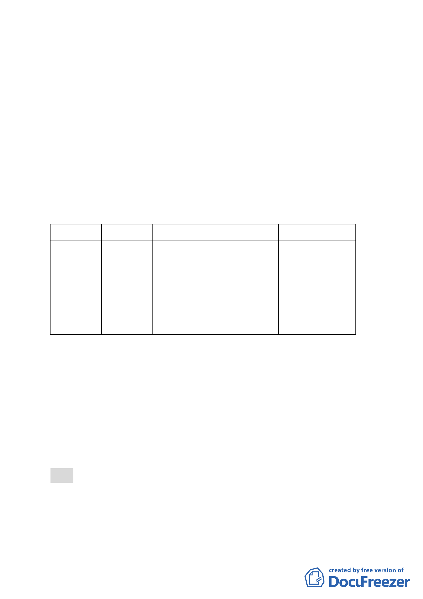

所有權人願意先行提供使用，則將併關渡平原整體開發方
式辦理」。為使計畫內容前後一致，且因部分土地所有權人
亦陳情表示希望依據 82 年公告之主要計畫先行提供土地
供市府使用，市府爰提出本主要計畫修訂案，就 99 年 7 月
22 日公告之計畫書內有關土地取得規定，依 82 年 1 月 15
日公告之都市計畫書所載明之規定文字予以修訂。
三、計畫內容：
修訂原計畫實施進度及經費有關土地取得方式，並依目
前辦理進度修正預定完工期程為民國 105 年 6 月。
修訂項目 原 計 畫
新計畫
修訂理由
土 地 取 得 徵 購 及 有 一、徵購及有償撥用。
與 82 年 1 月 15
方式
償撥用 二、採一般徵收方式為原 日 公 告 之 主 要
則，惟如土地所有權人 計畫內容一致。
願意先行提供使用，則
將併關渡平原整體開
發方式辦理。
四、本案係市府 100 年 11 月 18 日府都規字第 10037873203 號函
送到會，自 100 年 11 月 21 日起公開展覽 30 日（市府業於 100
年 12 月 6 日召開說明會）。
五、申請單位：臺北自來水事業處。
六、辦理機關：臺北市政府。
七、法令依據：都市計畫法第 27 條第 1 項第 4 款。
八、公民或團體陳情意見：無。
決議：本案除以下幾點文字應作修正外，其餘依市府所送計畫書
內容通過：
一、 計畫書第 1 頁請補列辦理單位：臺北市政府。
二、 計畫書第 2 頁原都市計畫情形表格最後 1 列計畫案名文字修
- 14 -